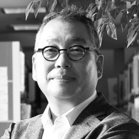

2019 Korean International Ceramic Biennale
2011년 출범한 경기세계도자비엔날레 국제위원회는 6회 비엔날레를 시작으로 지난 4회 동안 경기세계도자비엔날레의 전시, 학술을 포함한 행사 구성 전반에 대한 구상 및 기획을 점검하고 비엔날레 발전방안과 미래 방향성을 제시하는 중요한 자문기구로서 자리매김해왔습니다.
2019년부터 국제위원회는 이러한 자문기구로서의 역할 뿐만 아니라 10회 비엔날레의 중점사업인 '국제공모전' 심사의 역할까지 맡게 됨으로써 그 중요성이 한층 더 높아졌습니다. 각국 도자 및 관련분야 전문가들로 이루어진 국제위원회는 온-오프라인 회의, 온라인교신 등을 통해 활발하게 운영되며 경기세계도자비엔날레의 발전과 한국도자재단 운영 자문을 위한 소통 및 정보교환의 장으로 기능하고 있습니다.
프레데릭 보데 Frederic
전) 세브르 국립 도자기 박물관 큐레이터
프랑스
자넷 드부 Janet DeBoos
호주국립대학 명예교수
호주

서정걸 Jeonggurl Seo
한국도자재단 대표이사
한국
쥬디 슈왈츠 Judith Schwartz
뉴욕대학교 명예교수
미국
광센 쪼우 Guangzhen Zhou
IAC 중국 대표
중국
가즈코 토다테 Kazuko Todate
타마예술대학 교수
일본
임미선 Misun Rheem
한국공예·디자인문화진흥원 공예본부 본부장
한국
로지 그린리스 Rosy Greenless
영국공예장 본부장
영국